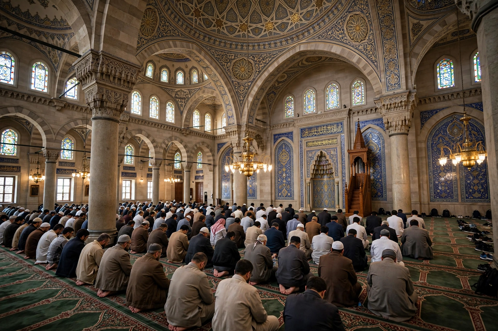

From Wikipedia, the free encyclopedia
| Muslims | |
|---|---|
 Worshippers at Friday prayer | |
| Total population | c. 2 billion worldwide (2020s estimates) |
| Founder | The Prophet Muhammad (7th century CE, Arabia) |
| Major branches | Sunni (c. 87–90%), Shia (c. 10–13%) |
| Holy book | Quran |
| Largest populations | Indonesia, Pakistan, India, Bangladesh |
Muslims (Arabic: مُسْلِمُونَ, muslimūn) are adherents of Islam, an Abrahamic monotheistic religion centred on the Quran, believed to be the verbatim word of God (Allah) as revealed to the Prophet Muhammad. The word muslim literally means "one who submits" (to God). With about two billion followers — roughly a quarter of humanity — Muslims form the world's second-largest religious population.
The core of Muslim belief is tawhid, the absolute oneness of God, and the prophethood of Muhammad as the final messenger in a line including Abraham, Moses, and Jesus. The central confession, the shahada, declares: "There is no god but God, and Muhammad is the Messenger of God." The tradition is expounded in the famous Hadith of Gabriel, which defines islam (outward practice), iman (faith), and ihsan (spiritual excellence). Muslims believe in angels, revealed scriptures, prophets, the Day of Judgment, and divine decree.
The Five Pillars of Islam structure Muslim practice: the shahada; the five daily prayers (salah), preceded by the ritual ablution of wudu and performed facing the qibla, the direction of the Kaaba in Mecca; almsgiving (zakat); fasting (sawm) during Ramadan; and the Hajj pilgrimage to Mecca once in a lifetime for those able. The pilgrimage culminates in the month of Dhu al-Hijjah and the festival of Eid al-Adha; the other great festival, Eid al-Fitr, ends Ramadan.
About 87–90% of Muslims are Sunni and 10–13% Shia, a division originating in the dispute over succession to Muhammad; smaller traditions include Ibadi Islam and Sufi orders, which cross the branches. The Asia-Pacific region holds the largest population — Indonesia is the largest Muslim-majority country, while India has one of the largest Muslim populations overall. Muslim-majority states include Pakistan, Bangladesh, Egypt, Turkey, Iran, and Saudi Arabia, the custodian of the holy cities of Mecca and Medina. The worldwide community is called the ummah.
Islam began in Mecca in 610 CE with Muhammad's first revelation; the migration (Hijrah) to Medina in 622 marks year 1 of the Islamic calendar. Within a century Muslim empires stretched from Iberia to Central Asia, and the faith spread along trade routes into sub-Saharan Africa and Southeast Asia. Muslim scholars preserved and extended Greek learning and made major contributions to mathematics, astronomy, medicine, and philosophy during the Islamic Golden Age.